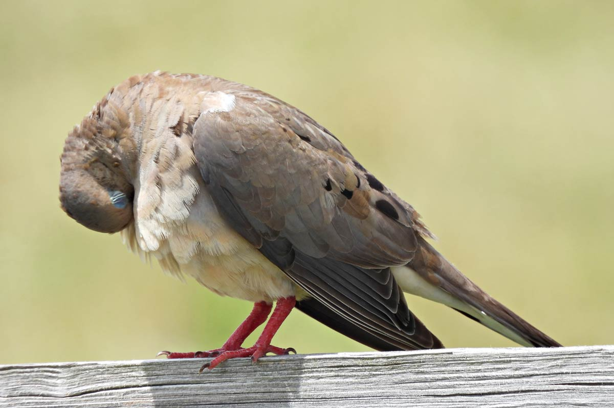

公鸟 - chim đực, 母鸟 - chim cái, 生产期 - mùa sinh sản, 下蛋 - đẻ trứng, 筑巢 - xây tổ, 幼崽 - con non.
1. 课本书
鸟儿的护肤术 - How birds take care of their feathers
大家都接触过鸟儿吧？那你知道鸟儿最重要的特征是什么吗？是有翅膀会飞？还是吃昆虫？
作为一只鸟儿，不管是天空中飞的，陆地上走的，或者能入水的，都必须拥有羽毛。没错儿，区分鸟儿和其他动物的唯一特征就是羽毛，而不是会不会飞！羽毛的作用很多，既可以保暖，又可以保护皮肤；羽毛上的颜色和斑还能充当保护色；当然，更关键的是，羽毛有助于飞行；甚至还有一些鸟儿的部分羽毛有“触觉”。
总之，在鸟儿的生活中，羽毛充当着十分重要的角色。所以，鸟儿非常爱惜羽毛，每天都会花很长时间来保养自己的“羽衣”。整理羽毛是保养的基本功，它们只要有时间，就会情不自禁地背过头去，反复地啄着羽毛，就像随身带了一把梳子梳头发一样，顺便上上油，让羽毛更光滑。另外，鸟儿在理毛的时候，还会抓出一点儿寄生虫。
毫无疑问，洗澡也是保养的一大基本项目。不过，鸟儿洗澡用不着肥皂，而且不同种类的鸟儿选择的“澡堂”也不一样，概括来说，就是以方便为原则。比如，海鸟在岛屿上生活，就会选择海水；知更鸟喜欢路旁的浅水坑；寒带的鸟呢，因为江河池塘不好找，只好以雪代水；而老鹰的洗澡方式更是直接，它们会在雨中张开翅膀痛快地迎接洗礼！
沙浴也是一些鸟儿喜欢的保养方式。所谓沙浴，就是用沙子洗澡，它们之所以放弃了用水洗澡，在很大程度上和它们的生活环境有关，它们大多生活在沙漠等干燥的环境，爱在地面上活动。另外，睡眠是鸟儿们最佳的保养方式，虽然我们很少看到睡眠中的鸟儿，那是因为它们通常会寻找一处秘密的地方休息。大多数鸟儿1天大约睡8小时，有些鸟儿差不多要睡1天，而另一些鸟儿几乎一点儿觉也不用睡。
改编自《科学松鼠会》，作者：临渊。

1.1. 生词
| No. | Word | Meaning |
|---|---|---|
| 1 | 接触 | jiēchù - v. to contact, to get in touch with |
| 2 | 特征 | tè zhēng - n. feature, characteristic |
| 3 | 翅膀 | chì bǎng - n. wing |
| 4 | 昆虫 | kūnchóng - n. insect |
| 5 | 天空 | tiān kōng - n. sky |
| 6 | 区分 | qūfēn - v. to distinguish, to differentiate |
| 7 | 唯一 | wéi yī - adj. only, sole |
| 8 | 斑 | bān - n. spot, speckle, stripe |
| 9 | 充当 | chōng dāng - v. to serve as, to play the part of |
| 10 | 总之 | zǒng zhī - conj. in short, in brief |
| 11 | 角色 | jué sè - n. role, part |
| 12 | 爱惜 | àixī - v. to cherish, to treasure |
| 13 | 保养 | bǎo yǎng - v. to take good care of, to maintain |
| 14 | 反复 | fǎn fù - adv. repeatedly, over and over again |
| 15 | 啄 | zhuó - v. to peck |
| 16 | 随身 | suíshēn - adj. (to carry/take…) with one, personally |
| 17 | 梳子 | shū zi - n. comb |
| 18 | 光滑 | guāng huá - adj. smooth, glossy |
| 19 | 寄生 | jìshēng - v. to live on another animal or plant, to be parasitic |
| 20 | 肥皂 | féi zào - n. soap |
| 21 | 种类 | zhǒnglèi - n. kind, category |
| 22 | 概括 | gài kuò - adj./v. brief and to the point; to summarize, to sum up |
| 23 | 岛屿 | dǎo yǔ - n. island |
| 24 | 知更鸟 | zhī gēng niǎo - n. robin, redbreast |
| 25 | 坑 | kēng - n. pit, hollow |
| 26 | 池塘 | chí táng - n. pond |
| 27 | 老鹰 | lǎo yīng - n. eagle, hawk |
| 28 | 痛快 | tòng kuài - adj. to one’s heart’s content |
| 29 | 洗礼 | xǐlǐ - n. baptism, washing ceremony |
| 30 | 沙子 | shā zi - n. sand |
| 31 | 干燥 | gān zào - adj. dry, arid |
| 32 | 秘密 | mì mì - adj./n. secret |
1.2. 注释
- 总之
Liên từ, khái quát tình huống trước đó, nói tóm lại. Ví dụ:
- 暑假我可能去上海、南京，还有杭州，总之，想去南方几个城市转转。
- 总之，网络的确带给我们以前无法想象的方便，但同时它也带来了一定的危害。
- 总之，在鸟儿的生活中，羽毛充当着十分重要的角色。
（1）不管你去不去，我们都会参加这次比赛。总之，去不去你自己决定吧。
（2）A：你怎么能把汉语学得这么好？
B：我每天都会练习写汉字，如果学到新的东西，我会立即记在笔记本上，我也会尝试更多地使用中文进行交流。总之，需要大量学习。
（3）一条鱼，你可以做成几个菜：煎鱼，蒸鱼，鱼汤。总之，中国菜有很多做法。
- 动词+过
Biểu thị người hoặc vật thể thông qua động tác để thay đổi phương hướng. Ví dụ:
- 他转过身，一句话也不说。
- ·····它们只要有时间，就会情不自禁地背过头去，反复地啄着羽毛，······
Biểu thị người hoặc vật thể thông qua động tác để di chuyển vị trí. Ví dụ:
- 接过书的那一刻，老王突然明白了自己失败的原因。
- 短短的几分钟里，我的脑子里闪过了很多想法。
（1）你回过头就可以看见我了。
（2）他递过一块毛巾给我擦汗。
（3）青年走到门口，转过身说：“我们会再见的。”
- 动词+开
Biểu thị mở ra, giãn ra. Ví dụ:
- 猴子突然站了起来，张开手臂，抱住了管理员。
- 《清明上河图》在我们的面前慢慢展开。
- 而老鹰的洗澡方式更是直接，它们会在雨中张开双翅痛快地迎接洗礼！
（1）回家时，妈妈张开双臂迎接我
（2）他把纸铺开，笔拿好，准备练习书法。
（3）那件事情已经都传开了，大家都知道了。
☢ Phân biệt: - 传 chuan2 (v) truyền đi - 转 zhuan3 (v) chuyển hướng - 转 zhuan4 (v) đi vòng quanh, loanh quanh (đi dạo) - 传 zhuan4 (n) truyện, ví dụ tự truyện là 自传
- Phân biệt 反复 và 重复
共同点： Đều có ý nghĩa là hơn 1 lần.
- 如：这件事情你已经反复/重复说过好几遍了。
不同点：
| 反复 | 重复 | |
|---|---|---|
| 1 | Phó từ, nhiều lần 如：他们只要一有时间，就会情不自禁的背过头去，反复地啄着羽毛。 |
Động từ, chỉ lại một lần nữa làm điều tương tự 如：我没听清，请你再重复一遍。 |
| 2 | Động từ, tình huống bất lợi, điều gì đó không tốt lại một lần nữa xuất hiện. 如：这种病容易反复。 |
Động từ, đồ vật tương tự lại lần nữa xuất hiện. 如：这两个练习题重复了。 |
| 3 | Danh từ, tình huống xấu lại lần nữa xuất hiện. 如：对这个问题，他思想上可能还有反复。 |
Không có ý nghĩa này.。 |
1.3. 扩展
问题：地理环境
| No. | Word | Meaning |
|---|---|---|
| 1 | 天空 | tian1kong1 - sky, bầu trời |
| 2 | 陆地 | lu4di4 - land (opp to sea) |
| 3 | 土地 | tu4di4 - land (properties) |
| 4 | 池塘 | chi2tang2 - pond, cái ao |
| 5 | 沙漠 | sha1mo1 - sa mạc, desert |
| 6 | 沙滩 | sha1tan1 - beach, bãi biển |
| 7 | 岛屿 | dao3yu3 - đảo, island |
| 8 | 岸 | an4 - bờ, river or sea bank |
| 9 | 洞 | dong4 - hole, lỗ, hang động |
| 10 | 木头 | mu4tou - wood, gỗ |
| 11 | 石头 | shi2tou - stone, đá |
| 12 | 灰尘 | hui1chen2 - dust, bụi |
1.4. 运用
我与/看宠物
作为一个生活在城市中的现代人,我深刻体会到养宠物给主人带来的巨大精神价值。在繁忙的城市生活中,一只忠诚的狗或温顺的猫咪能成为我们忠实的伴侣,为我们驱散孤独,缓解工作压力。每天下班回家,看到它们摇尾迎接或蹭腿撒娇,仿佛瞬间卸下了一天的疲惫。然而,城市生活的现实也给养宠物带来了挑战。狭小的居住空间可能限制了宠物的活动范围,高昂的生活成本也增加了饲养的经济负担。因此,在决定养宠物之前,我们需要深思熟虑,确保能为它们提供一个健康自由的生活环境。同时,我们还要考虑到邻里关系,尽量不影响他人的生活。总的来说,只要我们做好充分准备,养宠物依然是一种能带来快乐和慰藉的生活方式。
1.5. 口语
2. 作业本
2.1. 听力
1. 女：鸟儿最重要的特征是什么？是有翅膀会飞？还是吃昆虫？
男：区分鸟儿和其他动物的唯一特征就是羽毛。
问：鸟儿最重要的特征是什么？（C有羽毛）
2. 男：妈，我今天晚上又得加班，估计11点以后才能到家。
女：哎呀，老这样下去怎么行啊……你得爱惜身体！Ai da, Mẹ sao có thể như này mãi, con phải học cách quý trọng cơ thể
问：女的是什么语气？（B担心）
3. 女：年纪轻轻的，总这么把自己关在家里，不接触社会，怎么行？
男：可我就是不愿意出去工作，家里又不是没钱养我？
问：关于男的，下列哪项正确？（D不想工作）
4. 男：我觉得他挺好的，你怎么就不喜欢他呢？
女：一个大男人，天天随身带着把梳子，碰到镜子就梳来梳去的，我看不惯。Nhìn không có quen
问：女的为什么不喜欢那个人？（C太女性化） Nữ tính hóa
5. 女：电视电影里常常看到鲨鱼，都说它们是“海洋杀手”，是真的吗？
男：没那么可怕，地球上大约有370多种鲨鱼，大部分鲨鱼对人类无害，只有少数种类才会伤害人类。
问：关于鲨鱼，下列哪项正确？（D大部分不伤害人类）
6. 男：这个杯子真不错，是石头的还是金属的？
女：你看走眼了，这是木头的。Nhìn nhầm
问：这个杯子是什么材料做的？（A木头）
7. 女：爸爸，鸟儿是不是不用睡觉？
男：睡啊！大多数鸟1天大约睡8小时，有些鸟差不多要睡20个小时，当然，也有一些鸟几乎一点儿觉也不用睡。
女：那为什么我们很少看到睡眠中的鸟呢？
男：因为它们通常会寻找一处秘密的地方休息。
问：关于鸟儿的睡眠，下列哪项正确？（D经常躲起来） Trốn đi
8. 男：今天学的鸟儿沙浴，就是鸟儿用沙子洗澡，很有意思。
女：真是很难想象，用沙子怎么能洗澡呢？
男：因为它们生活在沙漠等干燥的环境里。
女：我倒是听说过，在一些沙漠地区，有人用沙疗的办法来健身治病。
问：沙疗有什么作用？（A强身健体）
9. 女：你相信吗，鲸以前是生活在陆地上的。
男：怎么可能呢？它不是海洋中最大的动物之一吗？
女：科学家们曾经在高山上发现过五十万年前古代鲸的骨头。研究后发现，鲸以前生活在海边，后来因为陆地上的食物越来越少，而海里鱼类丰富，所以它们慢慢地离开了陆地。
问：鲸为什么离开了陆地？（C寻找食物）
10. 男：你们宿舍新来的那个小王，办事真是太不痛快了！
女：怎么了？
男：她昨天说去超市，我请她帮我带块肥皂回来，她问了半天，又问要多少钱的，又问要洗衣服的还是洗澡的，又问要什么颜色的……有这工夫我自己都买回来了。
女：那是人家态度认真。
问：对于小王，男的怎么看？（C不干脆）
一只老鼠向狮子挑战，想要同它一决高低，被狮子拒绝了。老鼠问：“你害怕了吗？”“非常害怕，但我害怕的不是你。”狮子说，“如果我答应你，你就能得到曾与狮子比武的荣誉；而我呢，则会被所有动物嘲笑，说我竟然和老鼠打架。”毫无疑问，这只狮子是非常聪明的。因为它清楚与老鼠比赛的麻烦在于：即使赢了，对手也只是一只老鼠而已。一般情况下，大人物是没兴趣与低层次的人竞争的，他们更乐于面对与自己旗鼓相当（ngang tài ngang sức）甚至远高于自己的对手。
11-12.
11．狮子为什么拒绝老鼠？（D对手不够资格）
12．作者对狮子的做法持什么态度？（A赞成）
13-14.
通过长期的观察和研究，动物学家为我们展现了动物睡眠方面千姿百态（muôn hình muôn vẻ）的特点：兔子是个胆小鬼，一天只打三次盹，每次只有几秒钟，全天一共只睡大约两分钟。牛不停地吃草和反刍，一天最多睡半小时。大象是站着睡觉的，为了避免小虫子和老鼠钻进鼻子里，它在睡觉时要把长鼻子弯起来，卷进嘴里轻轻含着。狮子只要吃饱喝足了，可以一直睡上16个小时。
13．睡觉时间最短的是哪种动物？（B兔子）
14．大象睡觉时为什么要把鼻子弯起来？（D预防虫子，老鼠进入）
2.2. 阅读
15-18.
有一天，老虎抓住一只狐狸，心想，今天可以美美地享受一顿午餐了。可是，狐狸很15A狡猾，它骗老虎说：“我是天帝派到山林中来做百兽之王的，你要是吃了我，天帝是不会16D原谅你的。”老虎不相信。狐狸17B连忙说：“你如栗不相信我的话，可以跟我到山林中去走一走，我让你亲眼看看百兽害怕我的样子。”老虎想这倒也是个办法，于是就让狐猩在前面带路，自己尾随其后，一起向山林深处走去。森林中的动物们远远地看见老虎来了，都纷纷逃命。老虎不知道动物们是害怕自己而逃跑的，还以为18B他们是害怕狐狸才逃走的。
19. B鸟儿扇动翅膀产生向上的力量
鸟儿飞行时，主要起作用的是飞羽和尾羽。飞羽是长在翅膀上的，侬靠扇动气流产生向上的力量。尾羽是长在尾巴上的，主要用来控制方向，起到“舵”的作用。而它们身上其他的羽毛，在飞行过程中主要是起到减小空气阻力的作用。
20. D即使失败也可能有收获
赵老板运了一船鲜蚌在海上航行，阻干风浪，误了归期，满船的蚌肉都腐烂了。赵老板见血本无归，急得要跳海自杀。船长劝他：“等一等，也许你还剩下什么东西。”他率领水手清理船舱，从满船烂肉中找到一粒明珠，它的价值足以弥补货价运费而有余。“失败”同样会给我们留下一些宝贵的东西，比如说经验，它比珍珠还可贵。
21. C每个物种都有不一样的特点
一只小鸡看到一只老鹰在高高的蓝天上飞过，十分羡慕。于是它问母鸡：“妈妈，我们也有一双翅膀，为什么不能像鹰那样高高地在蓝天上飞呢?”母鸡回答说：“飞得高对我们来说没什么用。蓝天上没有谷粒，也没有虫子。”每个人都有自己的生存技能和与之相适应的环境（mỗi người đều có kĩ năng sinh tồn và môi trường phụ hợp với họ），我们在不断追求更高目标的同时，也要知道什么才是最适合自己的。
22. D教材里写的内容是错误的
百余年来，全世界所有的中学教材都告诉孩子们：鸟类最早的祖先是始祖鸟。始祖鸟（Archaeopteryx）生活在晚侏罗纪（Kỷ Jura）肘期，形象与现在的鸟儿不完全相同，它们虽然有羽毛，但前面两只翅膀上长着爪子，嘴里有尖尖的牙齿，尾巴很长。但是，历史，尤其是远古时期的历史，往往是在后人对前人的否定中曰渐接近真实的。
23-25.
长颈鹿母亲刚生下小长颈鹿后，会做出一件很不合常理的事——她抬起长长的脚，踢向她的孩子，使它翻了一个跟斗后，四肢摊开。
如果小长颈鹿不能站起身来，这个粗暴的动作就会被长颈鹿妈妈不断地重复。小长颈鹿为站起来，必须拼命努力。疲倦时，小长颈鹿有时会予亭止努力，母亲看到，就会再次踢向它，迫使它继续奋斗，直到小长颈鹿终于第一次用它颤动的双脚站起身来。
这时，长颈鹿母亲会做出更不合常理的举动。她会再次把小长颈鹿踢倒。为什么?她想让小长颈鹿记住自己是怎么站起来的，在头脑中形成长久的记忆。因为荒野里的狮子、土狼等野兽都喜欢猎食小长颈鹿，如果长颈鹿母亲不教会她的孩子尽快站起来，与大部队保持一致，那么它就会成为这些野兽口中的食物。
已故著名作家欧文·斯通毕生研究伟人，为许多人写过传记。斯通曾经被问及是否发现了贯穿这些杰出人物生命的线索。他说：“我写的这些人，都曾遭遐当头一击，一度被彻底打倒，然后在接下来的许多年里，他们走投无路。但是每次被击倒后，他们总会站起来。你不能摧毁这些人。”
23. C他让孩子联系站起来
24. A可能是群居动物
25. D要学会摔倒后爬起来
26-28.
台湾宽尾凤蝶，为昆虫纲、鳞翅目、凤蝶科、宽尾凤蝶属物种，是台湾特有的一种大型蝴蝶。
它的翅膀展开可达90~120mm。前翅底色黑而略带褐色，后翅在中室附近有白色大纹，在外沿则有一排红色弦月型纹。雌蝶较雄蝶略大，翅面更宽圆。台湾尾凤蝶具有特别宽大的尾状突起，同时二支翅脉贯穿其间，这是其他凤蝶所没有的特征，因此举世闻名。成虫栖息时常平放翅膀，飞行缓慢，常作滑翔，喜欢在向阳的崩塌地活动，幼虫寄生在擦树上。该种在乌来和台东都有采集记录。在学术上有很高的价值。
它的首次发现是在1932年的宜兰乌帽子河滩。过去中国台湾没有发现宽尾凤蝶的记载时，学术界普遍认为宽尾凤蝶属可能仅分布于中国大陆，然而在1932年7月，宜兰农林学校的曰本籍教师铃木利一采集到了宽尾凤蝶标本。这引起了当时台北大学教授素木得一的兴趣，当他初次见到铃木利一采集的标本时，表示难以置信。1933年5月，素木得一带着他的助手中条道夫前往该地点，历经数天辛苦等候，终于采集到第二只台湾宽尾凤蝶。
台湾宽尾凤蝶喜欢出没于海拔1000到2000米的山区，早期这些地点都是交通不便、人迹罕至的地方，加上其发生期仅限于每年5到8月间，因此当时的采集记录非常稀少，而被称为“梦幻之蝶”。但却也因为声名大噪，一对宽尾凤蝶往往可以卖到上万元。在金钱的驱使下，宽尾凤蝶开始面临前所未有的生存压力。
26. C昆虫
27. D
28. B